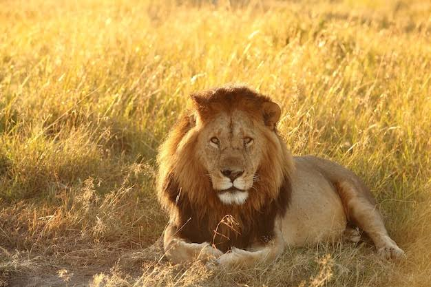

Lions are large, powerful carnivorous cats that live in family groups called prides.
They live in grasslands, savannas, and open woodlands. Most wild lions live in parts of Africa south of the Sahara, with a small protected population of Asiatic lions living in India's Gir National Park and Wildlife Sanctuary.
Lions are the most social of all wild cat species. They live in groups called prides, which usually contain 10 to 15 members, including related females, their cubs, and a small number of adult males. (National Geograghic)
| Speed | Lifespan |
|---|---|
| 80 km/ph | 15-16 years, 8-10 years |
| Diet | Sleep |
| Zebra, Gazelle , wildebeest, etc. | 20 hours a day |